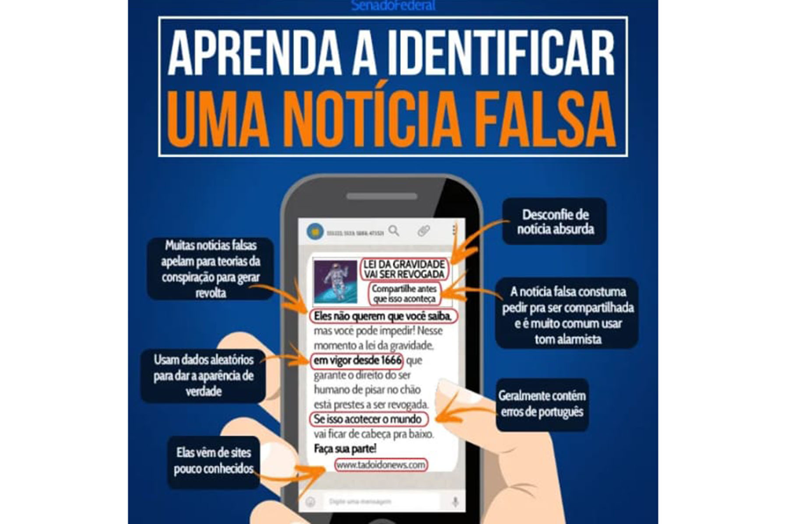

Antes de compartilhar um texto, é importante lê-lo com calma. Observe se ele possui palavras em letras maiúsculas, exclamações, abreviações, erros de ortografia e excesso de adjetivos. Des...
As pistas para descobrir fake news vão além do texto. Sites com nomes parecidos com o de veículos conhecidos, que não identificam seus autores e não possuem informações de contato...
No Facebook, é possível classificar o conteúdo suspeito como "falso": Basta clicar nos três pontinhos do canto direito da publicação. As agências de checagem de gatos espeecialmente em co...